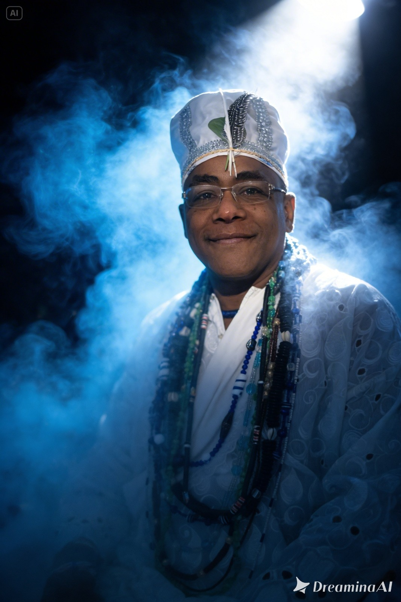
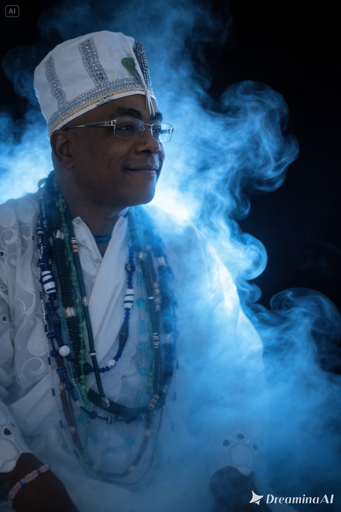

União Amorosa
Apoio para fortalecer vínculos afetivos.
Nzó Nkisi Atim D'Nkossi
Tata Roxiluanda
Equilíbrio | Amor
Prosperidade | Proteção | Saúde
Falar no WhatsApp
Tata Roxiluanda
Apoio para fortalecer vínculos afetivos.
Direcionamento espiritual para evolução financeira.
Limpeza e proteção para manter equilíbrio diário.
Clareza espiritual para decisões importantes.

Maurício atua com orientação espiritual e trabalhos energéticos voltados ao equilíbrio amoroso, espiritual e financeiro, oferecendo um atendimento sério, discreto e acolhedor.